武器紹介
・通常弾
| 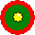 | これを極めればこのゲームで負けはない。 |
| 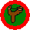 | 取ったらガッカリするほどの性能 |
| 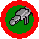 | 爆風が発生する。2.5倍ズーム付き。 |
| 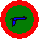 | 地味なようだが、射程、攻撃力ともに優秀。 |
| 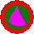 | 全段命中すれば致命傷を与えることができてしまう。 |
| 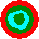 | 自分の周囲に弾を発射する。上に向けて撃つと美しい。 |
 | 山形の起動を描いて飛んでいく。中距離程度。 |
| 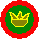 | 非常に遅い球が一つ発射された後、しばらくすると無数の爆風を持った弾が四方八方に飛び散る。タイミング次第で最強。 |
| 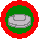 | 地面や空中に設置できる。レーダーには表示されない。しばらくすると消える。 |
| 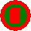 | 障害物を貫通する。 |
| 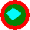 | 発射しても一定時間待機し、その後前進する。 |
| 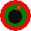 | 手榴弾より遠くに飛び、爆風がでかい。 |
| 連射がとにかく早いが、飛距離はあまり無い。 |
| 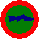 | ８倍ものズームが付いている。射程が長く、威力が高い。連射はできない。 |
| 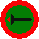 | ロックオンした敵を誘導する。爆風付き。 |
| 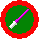 | 近距離攻撃。威力が高くてしょうがない。弾を打ち返すことができる。 |